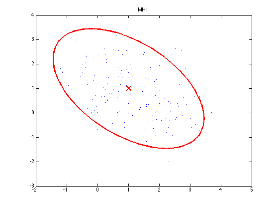
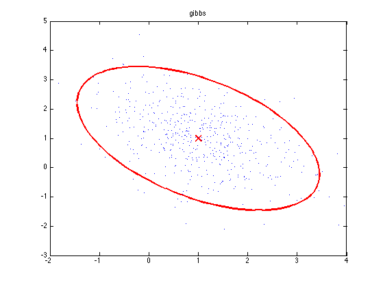
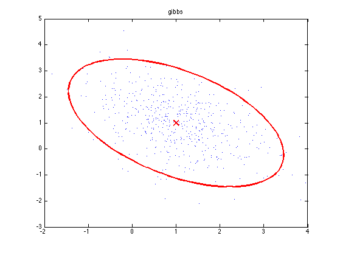
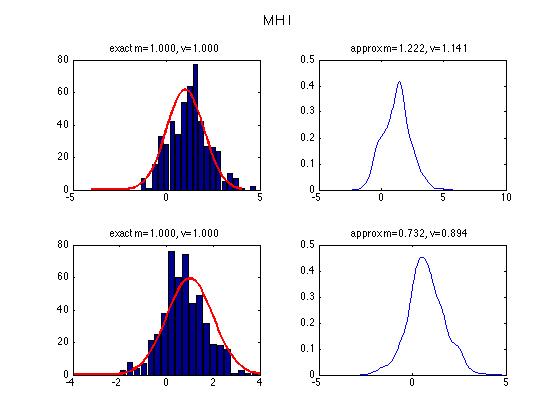
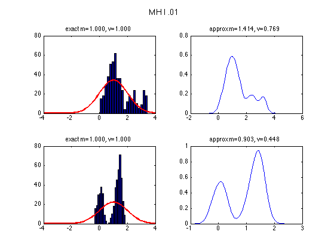
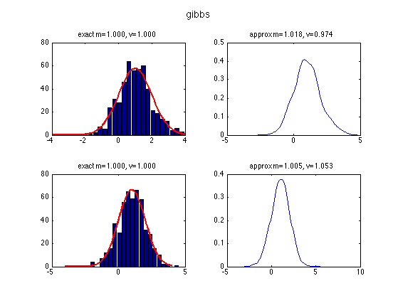
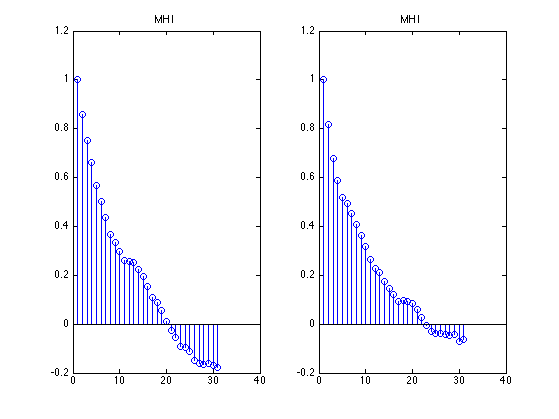
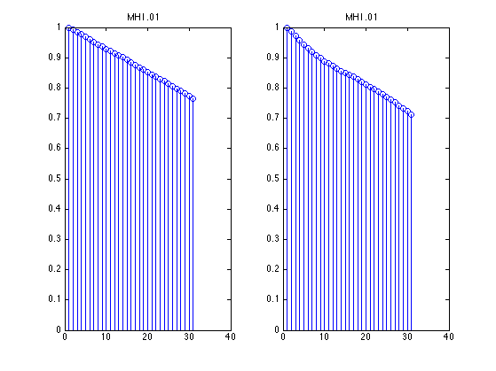
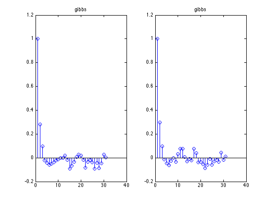

MCMC Sampling from a 2d Gaussians
Compare MH and Gibbs We use a N(0, sigma*eye(2)) proposal and see the effect of changing sigma
Contents
% This file is from pmtk3.googlecode.com
setSeed(0);
Sigma = [1 -0.5; -0.5 1];
mu = [1; 1];
N = 500;
model.mu = mu;
model.Sigma = Sigma;
marg1.mu = mu(1);
marg1.Sigma = Sigma(1, 1);
marg2.mu = mu(2);
marg2.Sigma = Sigma(2, 2);
margExact = {marg1, marg2};
targetFn = @(x) gaussLogprobUnnormalized(model,x); xinit = gaussSample(model, 1); S = cell(1, 3);
MH 1
proposal1 = @(x) gaussSample(x, 1*eye(2), 1);
S{1} = metropolisHastings(targetFn, proposal1, xinit, N);
MH 0.01
proposal2 = @(x) gaussSample(x, 0.01*eye(2), 1);
S{2} = metropolisHastings(targetFn, proposal2, xinit, N);
Gibbs
fullCondSampler = gaussMkFullCondSamplers(model);
S{3} = gibbsSample(fullCondSampler, xinit, N);
Plot
names = {'MH I', 'MH I .01 ', 'gibbs'};
for j=1:length(S)
samples = S{j};
ttl = names{j};
figure;
gaussPlot2d(mu, Sigma);
hold on
plot(samples(:, 1), samples(:, 2), '.');
title(ttl)
printPmtkFigure(sprintf('gauss2d%sSamples',...
strrep(strrep(names{j},' ',''),'.','')));
  
 figure();
for i=1:2
subplot2(2,2,i,1);
[counts, locs] = hist(samples(:, i), 20);
bar(locs, counts);
scale = (locs(2) - locs(1))*sum(counts);
hold on;
xs = linspace(-4, 4, 100)';
plot(xs, scale*exp(gaussLogprob(margExact{i}, xs)),...
'linewidth', 2', 'color', 'r');
title(sprintf('exact m=%5.3f, v=%5.3f',...
margExact{i}.mu, margExact{i}.Sigma));
subplot2(2, 2, i, 2);
if statsToolboxInstalled()
ksdensity(samples(:, i));
title(sprintf('approx m=%5.3f, v=%5.3f',...
mean(samples(:, i)), var(samples(:, i))));
end
end
suptitle(ttl);
printPmtkFigure(sprintf('gauss2d%sMarginals',...
strrep(strrep(names{j},' ',''),'.','')));
   figure();
for i=1:2
subplot(1,2,i);
stem(acf(samples(:,i), 30));
title(ttl)
end
   end
placeFigures();